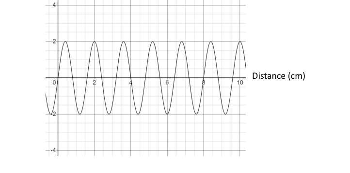
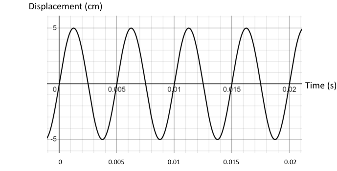
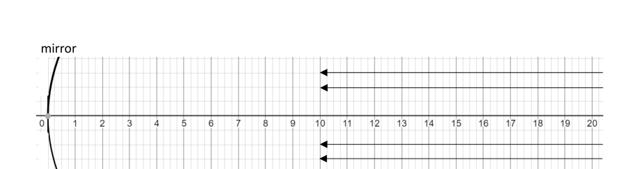
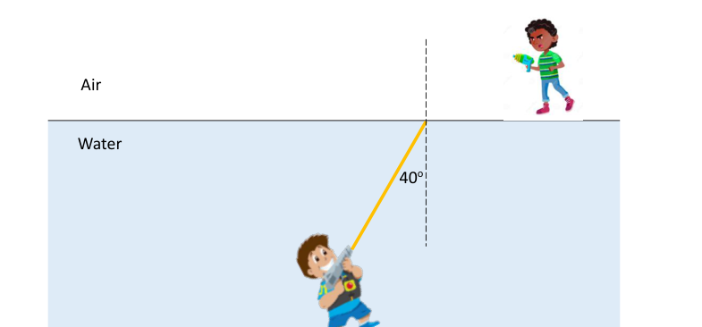
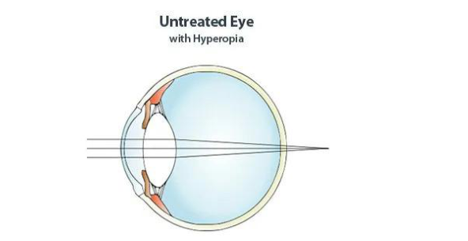
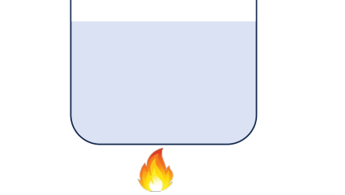

Section 1: Multiple choice (10 marks)
Which of the following is an example of a longitudinal wave?
Questions 2 and 3 refer to the following graph.

The amplitude of the wave is:
Which of the following gives the wavelength of the wave?
A sound wave of 20 Hz is played through a speaker. The period of the wave is:
T = 1 / f = 1 ÷ 20 = 0.05 s.
Which of the following is an example of incandescence?
Incandescence is light given off by something because it is very hot.
Which of the following materials is opaque?
If a magenta card was held under a red filter, what colour would the card look?
Only red light passes through the filter. A magenta card reflects red (and blue) light, so it reflects the red and looks red.
Which state of matter is described as: "particles are under attraction and repulsion forces, and can take the shape of their container"?
Which of the following does not increase the rate at which a material emits infrared (IR) radiation?
When a blue torch and a green torch are shone onto a white wall, the colour produced is:
Section 2: Short answer (28 marks)
Question 1 (9 marks)
The following graph shows a sound wave.

State the period of the wave.
Calculate the frequency of the wave.
f = 1 / T = 1 ÷ 0.005 = 200 Hz.
Is this a sound of low pitch or high pitch?
200 Hz is near the bottom of the human hearing range (about 20–20 000 Hz).
If the speed of the sound wave is 340 m/s, calculate the wavelength.
λ = v / f = 340 ÷ 200 = 1.7 m.
Sketch (on paper) two full waves of the sound wave if its period was doubled. Describe your sketch, then compare.
Two complete waves, each with a period of 0.01 s (so the two waves take 0.02 s) (1 mark), with the same amplitude (5 cm) as the original (1 mark).
The sound travels to the end of a hall, reflects and travels back to the speaker, where it is detected (still at 340 m/s). The sound takes 0.589 s to return to the speaker. Calculate the length of the hall.
The sound travels there and back, so the one-way time is 0.589 ÷ 2 = 0.2945 s. d = v × t = 340 × 0.2945 (1 mark) = 100 m (1 mark).
Question 2 (6 marks)
A concave mirror is placed over a ruler marked in centimetres, as shown below. The centre of the mirror is on the axis of the ruler.

On paper, continue the four parallel rays as they reflect off the mirror. For the bottom ray only, draw and label the normal, the angle of incidence (i) and the angle of reflection (r). Describe your diagram, then compare.
Part a (2 marks): all four rays reflect and converge (1 mark); they all meet at one point on the central axis, the focal point (1 mark).
Part b (3 marks): the normal is drawn at the point where the bottom ray hits the mirror (perpendicular to the mirror's surface, through its centre of curvature), and the angles i and r are correctly drawn and labelled, with i = r.
Based on your diagram, estimate the focal length of the mirror.
The distance from the mirror to the point where your reflected rays meet on the axis. Any value that matches your diagram from part a is accepted.
Question 3 (3 marks)
Two students are playing laser tag in the school pool. One student takes a deep breath, hides at the bottom of the pool and shoots a yellow laser at the other student, as shown below. The laser hits the water surface at 40° to the normal.

On paper, draw the two paths of the light (one reflected and one refracted) from the water/air interface. Describe them, then compare.
- The reflected ray goes back down into the water at the same angle (40°) to the normal as the incident ray (1 mark).
- The refracted ray passes into the air and bends away from the normal, at an angle larger than 40° (1 mark).
State the angle of reflection.
Question 4 (3 marks)
Hyperopia (long-sightedness) is a condition in which people can't focus clearly on near objects. The lens can't thicken enough, so rays from near objects focus behind the back of the eye.

State the type of lens that could be used to treat someone with hyperopia:
On paper, draw your lens in front of the eye and show the path of parallel light rays with the corrective lens in place. Describe your diagram, then compare.
- A convex lens is drawn in front of the eye (marks are only given if it matches part a).
- The rays refract (converge) at the convex lens and again at the eye's lens, and now meet on the retina at the back of the eye.
Question 5 (4 marks)
A pot of water is placed on a stove and heated. The initial temperature of the water is 25 °C.
What is the temperature of the water on the Kelvin scale?
25 + 273 = 298 K.
If the water's temperature increases by 50 °C, what is the increase in temperature in kelvin?
A change of 1 °C is the same size as a change of 1 K.

On paper, sketch how heat is transferred within the water. Annotate your sketch to show the method of heat transfer. Describe it, then compare.
Arrows showing a convection current: water rises up the middle above the flame, moves across the top, and sinks down the sides (1 mark). Annotation: hot water rises (it is less dense) and cooler water sinks (1 mark).
By referring to the kinetic energy of water molecules, explain how perspiration (sweating) helps cool you down when you exercise.
- The water in sweat evaporates (1 mark).
- The molecules that escape are the ones with the most kinetic energy, so the average kinetic energy of the molecules left behind is lowered (1 mark).
- A lower average kinetic energy means a lower temperature, so your skin cools (1 mark).